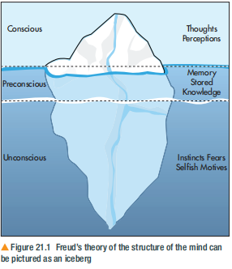
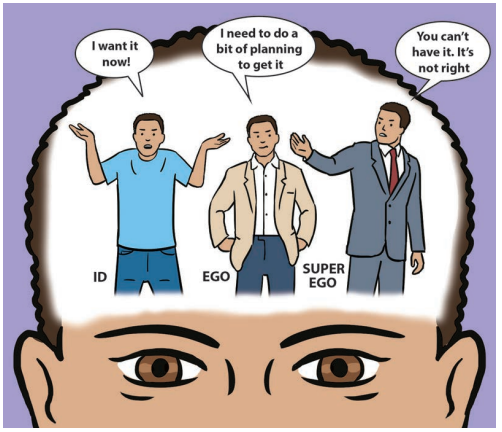

🧠 CHAPTER 21: THE ROLE OF THE UNCONSCIOUS IN PERSONALITY DEVELOPMENT
潜意识在人格发展中的作用
1. Learning Objectives（学习目标）
⚡ Quick Summary — 本节要学什么
Chapters 20 explained behaviour with learning: association, consequence, observation. But have you ever done something you cannot explain — shouted at someone for no reason, refused to see a sibling? Freud's answer: the cause is hidden in the unconscious mind（潜意识）. This chapter explains what the unconscious is, how it shapes personality（人格）, and how we evaluate such a theory.
🎯 By the end of this chapter, you should be able to describe and evaluate:
- The role of the unconscious in personality development（潜意识在人格发展中的作用）— the three levels of mind (conscious, preconscious, unconscious), the primal instincts (Eros & Thanatos), repression, and the three parts of personality (id, ego, superego).
- Defence mechanisms（防御机制）— how the ego manages conflict, with displacement and denial as examples.
- The evaluation（评价）— Little Hans, subjective evidence and unfalsifiability, generalisability, and Freud's pioneering contribution.
🗺️ Where this fits in spec 4.1.4
Spec 4.1.4 has two halves: Freud's psychosexual stages（性心理发展阶段 — oral, anal, phallic, latent, genital）and the role of the unconscious in personality development. This chapter covers the unconscious & personality half, exactly as the textbook does. The psychosexual stages belong to the next chapter（下一章再讲，配合课本对应章节的截图）.
2. Getting Started — Behaviour We Cannot Explain（开局思考：解释不了的行为）
⚡ Think about this before you read on
Have you ever had a feeling or done something which you cannot explain? You might have shouted at someone even when you were not cross with them, or felt angry without explanation. Freud tried to explain these feelings and behaviours by understanding the unconscious cause. However, we cannot access the unconscious cause directly, we must look for clues in the way people behave.
💬 课本 Getting Started 任务
In pairs, discuss clues that explain these particular behaviours. Remember: you are not looking for an obvious explanation, but a motivation that may exist in the unconscious mind.
- A student failing to turn up for an exam
- A parent not liking their teenage child's friend
- A toddler pinching her baby brother
- A person who refuses to see their siblings
INTERACTIVE 🤔 先自己想，再看 Freud 会怎么猜
Each behaviour above could have an obvious explanation — "overslept", "the friend is rude". But Freud digs one level deeper. Make your own guess first, then click a behaviour to see the kind of unconscious motivation a Freudian might propose.
A possible unconscious clue:
Maybe the student did not really "forget" — part of them is afraid of failing, so the mind quietly arranges an escape. The visible behaviour (absence) serves a hidden wish (avoid the failure that an exam would reveal).
A possible unconscious clue:
The parent may see themselves at that age in the friend — or resent the friend for "taking away" their child. The dislike is real, but its true target is not the friend's actual qualities; it comes from somewhere the parent cannot see.
A possible unconscious clue:
The toddler wants all of the parents' love and attention for herself. The new baby threatens that. She cannot put this into words — it leaks out as an action: pinching.
A possible unconscious clue:
Perhaps seeing the siblings stirs up old rivalry or painful memories that were pushed down long ago. Avoiding them keeps those buried feelings buried. Notice this connects to behaviour 1 — "forgetting" and "avoiding" can both be unconscious strategies.
3. Freud: From Neurology to Psychology（Freud：从神经科到心理学）
The theory of the unconscious did not appear out of nowhere — it grew out of Freud's frustration as a doctor. Patients had symptoms with no physical cause, so he had to look somewhere no microscope could reach: the mind.
hysteria（歇斯底里/癔症）— an outdated term today, but used by Freud to describe physical symptoms without a clear medical explanation.（身体上真实出现了症状——瘫痪、失明、抽搐——但查不出任何生理原因。）
🩺 Vienna — the puzzle（谜题）
Freud was born in Moravia, Austria, in 1856 and spent much of his life in Vienna working as a doctor. He mainly worked with patients with neurological disorders（神经疾病）, but suspected there was no biological cause for their symptoms.
🎭 Paris — Charcot & hypnosis（转折点）
A turning point came when Freud went to Paris to work with Jean-Martin Charcot. Charcot treated hysteria patients and was able to alleviate symptoms using hypnosis（用催眠缓解症状）. This introduced Freud to the idea that these disorders may be explained by the mind rather than any biological cause.
🗣️ Vienna again — Breuer & Anna O（ talking cure 的雏形）
On his return, Freud partnered with the physician Josef Breuer. Breuer had treated a patient named Anna O who suffered from a variety of symptoms. Breuer encouraged Anna O to talk about her symptoms, which seemed to offer relief — talking seemed to release hidden emotions thought to be the cause of her symptoms.
🧩 So what?（这一段在讲什么逻辑）
Body is fine → hypnosis (a mental technique) helps → talking helps → therefore the cause must be mental, and hidden. These early influences led Freud to develop his theories of mind and personality development — everything in §4–§9 grows from this clinical starting point.
4. The Three Levels of Mind（心理的三个层面）
Freud believed that there were three distinct levels of the human mind: the conscious, the preconscious and the unconscious. This is often pictured as an iceberg (Figure 21.1).
Before you meet the iceberg, meet the three levels（先认识三层，再看图）. They are organised by one question: how close is this material to your awareness right now?（这段心理内容离「你现在知道」有多远？）Read the table top to bottom — each level is deeper and harder to reach than the one above.
| Level（层面） | Awareness status（意识状态） | What it contains（里面装什么） | Everyday example（生活例子） |
|---|---|---|---|
| Conscious（意识） | Thoughts and perceptions you are currently experiencing（此刻正在想的） | Present thoughts, perceptions | Reading this sentence right now |
| Preconscious（前意识） | Not in immediate awareness, but can be brought into consciousness with effort（努力一下就能调出来） | Stored memories, stored knowledge | Your home address; what you ate yesterday |
| Unconscious（潜意识） | Inaccessible to the conscious mind — not directly reachable at all（完全够不着） | Thoughts, conflicts, desires that are not accessible; instincts, fears, selfish motives | The real reason you "hate" that friend — you can't just recall it |

🧊 How to read the iceberg（怎么读这张图）
The tip above the water = the conscious mind: tiny, just what you are aware of now. The layer just below the waterline = the preconscious: memory stored knowledge, reachable if you dive a little. The huge mass at the bottom = the unconscious: instincts, fears, selfish motives — the largest part, and completely invisible. The picture's message is about size: what you are aware of is only a small fraction of what is going on in your mind.
5. What Powers the Unconscious: Eros & Thanatos（潜意识靠什么运转：生本能与死本能）
Despite being inaccessible to us, the unconscious exerts a powerful influence on our behaviour and emotions. It is influenced by two primal instincts（原始本能）.
💀 Thanatos — the death instinct（死本能）
Textbook: "Thanatos motivates aggression and destruction."
In plain words: 推着我们去做破坏性、攻击性事情的原始力量。
Everyday: the urge to slam a door, snap at someone, or want to smash something when frustrated.
🌱 Eros — the life instinct（生本能）
Textbook: "Eros motivates creativity and preservation of life."
In plain words: 推着我们创造、维系生命、让生活更好的原始力量。
Everyday: making friends, cooking a meal, building something, caring for a pet.
⚖️ Why both matter（两个都要记）
Each primal instinct motivates us — every person carries both. Your behaviour at any moment can be read as the outcome of these two forces pulling from inside the unconscious. Hold this idea: it explains why the unconscious is not just a storage room but an engine（不是仓库，是发动机）.
6. Repression & How the Unconscious Leaks（压抑与潜意识的「泄漏」）
If the unconscious is locked away, how does it still run the show? Freud's answer has two parts: repression keeps threatening material down there — but the buried material still leaks out sideways.
repression（压抑）— a defence mechanism which operates by keeping threatening, harmful or unacceptable thoughts out of our conscious awareness, keeping them hidden in the unconscious mind.
🌫️ Part 1 — Repression hides, but does not erase（藏起来 ≠ 消失）
Repression does not diminish the intensity of these thoughts: even though we are unaware of them, they exert great influence and we expand energy trying to hold them in the unconscious.（被压下去的想法劲头不减，我们还在持续花「心理能量」按住它。）
💧 Part 2 — The unconscious leaks out（潜意识会漏出来）
Freud believed that the unconscious reveals itself through how we behave and the symbolic content of our dreams. These can be interpreted to reveal the nature of the unconscious mind.（行为和梦是潜意识的两扇窗户。）
7. The Three Parts of Personality: Id, Ego & Superego（人格三我）
Closely related to the concept of the unconscious is Freud's three parts of personality: the id, ego and the superego. The id, ego and superego interact in a dynamic way to determine our behaviour.
Before you meet the cartoon, meet the three players（先认识三我，再看图）. Each part answers three questions: Where does it live? (which level of mind) · What rule does it follow? (its principle) · What does it want? Keep these three questions in mind and the definitions below read themselves.
| Part | Where it lives（住在哪一层） | Its principle（遵循的原则） | What it wants / does（它要什么、做什么） |
|---|---|---|---|
| Id（本我） | Operates entirely in the unconscious mind | The pleasure principle（快乐原则） | The primitive part: contains drives and impulses, requires immediate gratification（立刻满足） |
| Ego（自我） | Spans all levels — in touch with reality | The reality principle（现实原则） | The rational part: works to satisfy the id's impulses in a realistic way — it makes rational decisions to prevent, modify or delay the id's impulses to make them more acceptable |
| Superego（超我） | Developed from society's morals and values | The moral conscience（道德原则） | Has internalised society's morals and values; acts as our moral conscience to guide behaviour about what is right and wrong |

😈 Id — "I want it now!"（现在就要！）
The primitive part, entirely unconscious. It is like a demanding baby: drives and impulses only, and it wants them satisfied immediately. It does not care about consequences, reality, or morals — those are not its job.
🧑💼 Ego — "I need a bit of planning to get it"（得计划一下）
The rational part that negotiates between the id and reality. Note the direction: the ego does not crush the id — it works to satisfy the id's impulses, but in a realistic way, deciding when and how they can be released.
👮 Superego — "You can't have it. It's not right!"（不行，这不道德！）
The internalised voice of society: rules about right and wrong absorbed from parents and culture. It blocks or condemns impulses that violate morality — the source of guilt when you break your own moral code.
🎭 The dynamic balance（动态平衡）
The three interact dynamically: sometimes the id's demands are met, sometimes the superego is dominant. The ego tries to balance the demands of the id, reality and the superego. A weak ego can lead to impulse control issues（自我弱 → 管不住冲动）.
8. Conflict & the Ego's Job — Role Play（冲突与自我的工作：角色扮演）
Sometimes dynamics between the three parts of personality can lead to conflict which can cause internal tension. When conflict arises, the ego can use defence mechanisms to manage the tension.
🍫 课本 ACTIVITY 1 — Teamwork, Collaboration, Creativity
In a small group of three, consider the following scenario: You are at a party and you want to eat a big piece of chocolate cake before the other guests. Role play what the id, ego and superego would do in this situation:
- What would the id do?
- What would the ego do?
- What would the superego do?
INTERACTIVE 🎭 先分配角色演一遍，再对答案
In your group, each person takes one part (id / ego / superego) and says their line out loud. The cartoon voices from §7 are a good script. Then click to compare with our suggested lines.
Id（快乐原则）:
"Cake. Now. Big piece. Before anyone else takes it." — immediate gratification, no thought of guests, manners, or consequences. The id operates entirely in the unconscious: this urge just happens to you.
Ego（现实原则）:
"We can have cake — but let's wait until the host cuts it, and take a normal slice so we're invited back." — satisfies the id's impulse in a realistic way: prevent, modify, or delay.
Superego（道德原则）:
"Grabbing cake before the guests? That's greedy and rude. You know better." — the internalised moral voice, ready to make you feel guilty if you ignore it.
➡️ From tension to defence mechanisms（从紧张到防御机制）
When the three parts clash, the result is internal tension（内在紧张）— anxiety. The ego cannot always solve this by planning alone, so it has a second toolkit: defence mechanisms, which we meet in §9.
9. Defence Mechanisms: Displacement & Denial（防御机制：转移与否认）
Defence mechanisms are unconscious psychological strategies to help resolve anxiety experienced when we have internal conflict.（防御机制本身是无意识的——你意识不到自己在防御。）
↪️ Displacement（转移）
Textbook: one ego defence mechanism is displacement; this involves redirecting unacceptable impulses from one object to another which is less threatening.
Textbook example: A student receives a low grade for an essay that they worked really hard on. The student feels angry and frustrated but cannot confront his teacher about it, so they instead get into an argument with their friend.（怒气从「不敢惹的老师」转移到「惹得起的朋友」——对象换了，冲动没变。）
🚫 Denial（否认）
Textbook: denial involves blocking unacceptable thoughts from the conscious mind.
Textbook example: A student forgetting to turn up for an exam and claiming they did not know about it.（「忘」了考试还说没人通知我——把无法接受的事实挡在意识之外。对照 §2 第 1 条：这「忘记」可能不是偶然。）
INTERACTIVE 🧭 Scenario sorter — displacement or denial?
Four scenarios. Decide which defence mechanism each one shows. Judging tip: displacement moves an impulse to a safer target; denial refuses to let the fact into consciousness at all.
10. Evaluating Freud's Theories（评价 Freud 的理论）
Stay close to the textbook's four evaluation angles: the Little Hans evidence, the subjective nature of the evidence, generalisability, and the pioneering contribution.
Freud largely based his theories on clinical case studies of his own patients. One of these was a child named Little Hans. Little Hans had a phobia of horses, and was particularly scared of horses wearing blinkers around their eyes. He also feared being bitten, and became particularly scared when seeing a horse collapse in the street.
Freud interpreted Little Hans' fear of horses as the Oedipus complex（俄狄浦斯情结）: his fear was actually an unconscious fear of his father. His fearfulness at seeing the horse collapse was interpreted as unconsciously wishing his father dead.（眼罩像父亲的眼镜；马倒地=盼父死去——整套解读都发生在潜意识层面。）
Textbook's caution: while this may offer some evidence for the unconscious mind, it would be unwise to validate an entire theory of mind based on one single case. Freud only met Little Hans on a few occasions — much of the psychoanalysis was conducted by Hans' father.
🔍 1 · Subjective evidence（证据是主观的）
A main objection: his methods used data are considered unscientific. Freud interpreted his patients' and his own behaviours and dreams to develop his theories. These are subjective interpretations — not reliable, as he may have paid attention to data that fitted his theories and ignored data that did not（只留意支持自己理论的证据）.
🧪 2 · Unfalsifiable（不可证伪）
There is no empirical evidence for the unconscious mind, and by definition it is inaccessible to direct study. We cannot test id, ego and superego — they are psychological constructs. If we cannot measure the constructs, the theory is unscientific: it is unfalsifiable — it cannot be proven or disproven. Being able to refute (prove false) a theory is an important principle of science.
👥 3 · Generalisability（代表性不足）
Freud gathered data from middle-class Viennese women during the late 1800s and early 1900s who suffered with hysteria. We cannot generalise a theory of the human mind and personality development from such a limited sample.（一小群特定时代、特定文化、特定问题的病人 → 全人类的心理理论。）
🌟 4 · However — the pioneering contribution（开创性贡献）
His theories led to treating patients differently — gaining a deeper understanding of their unique experiences rather than focusing just on their symptoms. His research and therapy has also led to the development of modern psychotherapies used to treat mental illness.（从「只看症状」到「理解人」，心理治疗由此起步。）
11. Thinking Like a Psychologist（像心理学家一样思考）
🔬 课本 THINKING LIKE A PSYCHOLOGIST
Psychology is a science which employs scientific methods when studying behaviour. In pairs, discuss whether the concept of the unconscious can be scientifically verified. List reasons for your justification.
DISCUSSION 💬 先讨论，再校对
Try to build both sides before clicking. Hint: one side is about the definition of the unconscious; the other side is about what scientists do with unobservable things elsewhere in science.
Cannot be verified:
By definition the unconscious is inaccessible to direct study — we cannot observe it, measure it, or test id/ego/superego. Unmeasurable constructs make the theory unfalsifiable: no possible observation could prove it wrong. Any behaviour can be "explained" after the fact by some unconscious motive — an explanation that can never fail explains nothing, scientifically speaking.
Still worth studying:
Science does deal with unobservables (gravity was invisible too) — the issue is testable predictions, not visibility. And clinically, the concept led to modern psychotherapies and to treating patients as people with unique experiences, not just symptom-carriers. The honest position: a rich, historically powerful theory that sits outside strict scientific verification.
12. Checkpoint & Exam Practice（关卡检查与真题演练）
✅ CHECKPOINT — Skills: Interpretation, Adaptive Learning
1 · Match the parts of mind and personality to the correct description（连一连）
Pick the matching letter for each item, then press Check.（每项选出对应描述的字母，最后点 Check。）
| Term | Your match |
|---|---|
| 1 · Conscious | |
| 2 · Preconscious | |
| 3 · Unconscious | |
| 4 · Id | |
| 5 · Ego | |
| 6 · Superego |
2 · Which part of the personality does each statement describe?（判断谁在起作用）
📝 EXAM PRACTICE — Skills: Critical Thinking, Reasoning
1. Marta is preparing a birthday meal with lots of sweet treats. She lays out the sweet treats on a table. Her younger sister and brother, Noore and Suresh, see the sweet treats and want to eat them before the birthday meal. Marta forbids them from eating before the meal. Noore cannot resist, and eats a handful of sweet treats in front of Marta. Suresh goes off and plays outside because he knows it would be wrong to eat any sweet treats.
a) Explain, using Freudian theory, which part of Noore's personality was responsible for his behaviour. (2 marks)
AO1 Noore's behaviour was driven by the id（本我）. The id is the primitive part of personality which operates entirely in the unconscious mind and works on the pleasure principle, requiring immediate gratification of drives and impulses. AO2 Noore "cannot resist" and eats the treats in front of Marta — he seeks immediate gratification of his desire despite knowing he was forbidden, which is the id demanding satisfaction now. (2)
b) Explain, using Freudian theory, which part of Suresh's personality was responsible for his behaviour. (2 marks)
AO1 Suresh's behaviour was driven by his superego（超我）. The superego is the part of personality which has internalised society's morals and values, acting as our moral conscience to guide behaviour about what is right and wrong. AO2 Suresh goes off to play because he knows it would be wrong to eat the sweet treats — his behaviour is guided by the internalised moral standard, not by desire (id) or practical negotiation (ego). (2)
c) A friend of Marta arrives with her daughter Lucy. Lucy wants the sweet treats before the birthday meal, but waits until her mother and Marta leave the room before taking one. Explain, using Freudian theory, which part of Lucy's personality was responsible for her behaviour. (2 marks)
AO1 Lucy's behaviour was driven by her ego（自我）. The ego is the rational part of personality which operates on the reality principle — it works to satisfy the id's impulses in a realistic way by making rational decisions to prevent, modify or delay the id's impulses. AO2 Lucy still wants the treats (the id's desire is intact), but she delays taking one until the adults have left — a realistic compromise rather than immediate gratification or moral refusal. (2)
2. Describe the role of the unconscious according to Freud. (2 marks)
AO1 The unconscious is the largest part of the mind, containing thoughts, conflicts and desires that are not accessible to the conscious mind. Despite being inaccessible, it exerts a powerful influence on our behaviour and emotions — driven by the primal instincts Eros and Thanatos — and reveals itself through our behaviour and the symbolic content of our dreams. (2)
3. Evaluate the role of the unconscious in personality development. (8 marks)